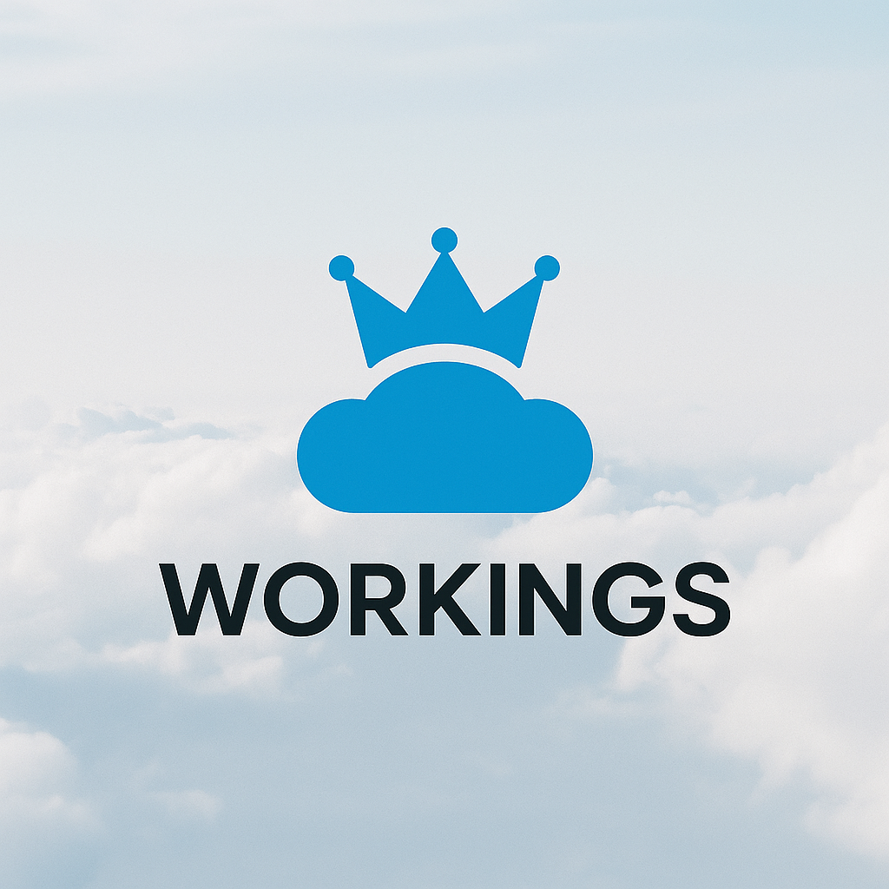

WORKINGS est une Academy & ESN spécialisée dans l’écosystème Salesforce. Notre ambition est de révéler le potentiel de chacun via des formations certifiantes, un accompagnement humain, et une intégration rapide en entreprise. Nous combinons les standards d’une école exigeante et l’efficacité d’une ESN pragmatique.
Le digital évolue vite. Chez WORKINGS, nous formons des profils adaptables, pragmatiques et rigoureux. Nous croyons au pouvoir de la transmission, du coaching individuel et de la progression continue. Nos juniors deviennent des cracks, nos confirmés des experts formateurs.

• Une formation complète en 4 mois avec coaching et certif
• Une embauche directe à la sortie (ou matching client)
• Un suivi en mission & une vraie communauté d'entraide
• La possibilité de devenir formateur en parallèle de la mission